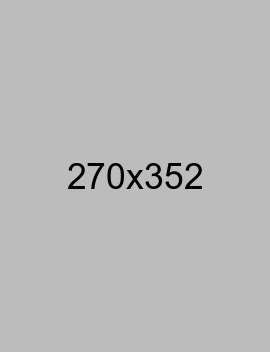
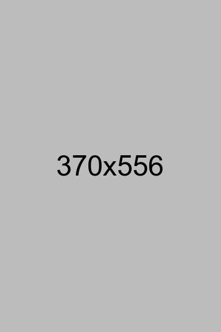

0.001 inch resolution measurement instrument for precision work


The digital micrometer is an essential precision instrument designed for accurate measurement of thickness, diameters, and depths of various industrial components. Perfect for quality assurance, engineering applications, and manufacturing environments where precision is paramount.
With 0.001 inch resolution and a digital display for easy reading, this micrometer is ideal for B2B applications requiring consistent, reliable measurements. The hardened steel construction ensures durability and longevity in industrial settings.
| Parameter | Value | Unit |
|---|---|---|
| Measurement Range | 0-1 | inch |
| Resolution | 0.001 | inch |
| Accuracy | ±0.001 | inch |
| Display Type | LCD Digital | - |
| Material | Hardened Stainless Steel | - |
| Weight | 95 | g |
| IP Rating | IP54 | - |
| Battery | CR2032 Lithium | - |
Quality control of turned parts, shafts, and cylindrical components in production environments.
Verification of part dimensions and tolerance checking during product development and prototyping.
Professional measurement services for quality assurance and compliance with dimensional specifications.